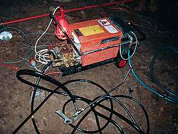
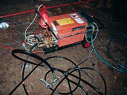

The Professional Development of Show Caves
All around the world caves are developed to make them suitable for tourists. Paths are built and electric light is installed. This work is done, depending on the local traditions and probably the local laws. Several countries have institutions which are responsible for the safety of the visitors and which check the installations. There are caves with very little installations, which are a bit rough and probably only suitable to physically fit visitors. But there are also caves which are very well developed, sometimes even without respect to the environment.
On this page we collected some examples of astonishing development results. They are somewhere between funny and frightening. But have a look yourself.


 


And a last word: there are many pictures from Australia on this page.
This does not mean that Australian caves are unsafe or anything similar.
We felt safe and enjoyed our visits.
It is just a coincidence that the most funny pictures we found on this topic were from this series.
We've seen similar and worse all over the world.
Still, it seems rather strange when you see this in western high-tech countries like France, Belgium, Germany, or Australia.
Some countries do not have such problem: most caves in Romania or Ecuador do not have electric light...

- See also
 Search Google for "Professional Development of Show Caves"
Search Google for "Professional Development of Show Caves" Recommended International Guidelines for the development and management of Show Caves (visited: 10-AUG-2023)
Recommended International Guidelines for the development and management of Show Caves (visited: 10-AUG-2023)- A Global Perspective on Sustainable Show Cave Tourism (visited: 10-AUG-2023)
- Technical Aspects Regarding the Equipment of Show Caves with Modern LED Systems (visited: 10-AUG-2023)
- Tourism and show caves (visited: 10-AUG-2023)

 Index
Index Topics
Topics Hierarchical
Hierarchical Countries
Countries Maps
Maps Search
Search{kind=link}